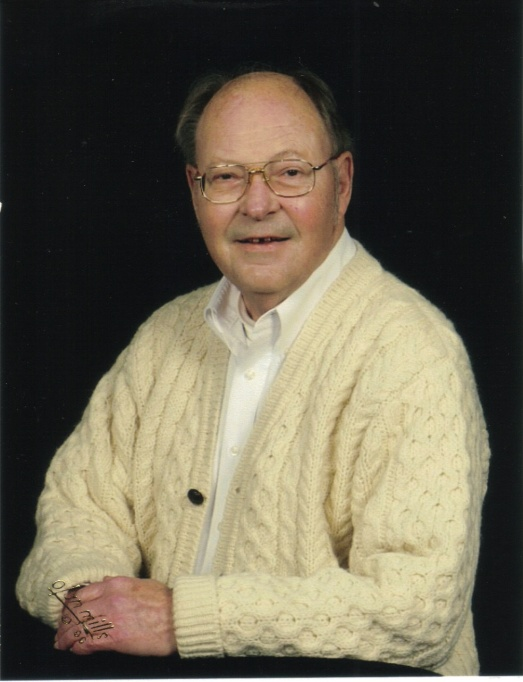

Robert W. Boyd
Dec. 15, 1939 to Apr. 17, 2014
Relationship to St. Andrew United Methodist Church:
Bob and his wife Carol became members of St. Andrew in 2005.
Family:
Robert grew up in Orleans, Indiana. He married Carol on December 20, 1958. They have one son, Rob, and one daughter, Debbie Saricos (husband Jim.) Grandchildren are: Christine Saricos Sullivan, Michael Saricos, and Stacey Saricos. Greatgrandchild is: Ryan Sullivan.
Recognitions, Activities, Special Interests:
Robert graduated from Purdue University School of Pharmacy in 1962. He was a registered Pharmacist and worked at Arth Drugs, Wells Yeager Best Drugs, and Marsh Drugs. He was an avid reader. Robert took great pride in his vegetable garden each summer and always produced excellent vegetables.
Use of Funds:
Family has requested funds go to the InTouch Ministry to aid in providing cards, meals, or whatever is needed to lift the spirits of those in need.
Obituary published in the Journal & Courier from Apr. 17 to Apr. 20, 2014
Robert W. Boyd, 74
Robert W. Boyd, 74, of West Lafayette passed away Thursday, April 17, 2014, at
University Place. He was born December 15, 1939, in Indianapolis to the late
William and Mildred Walker Boyd. Bob graduated from Orleans High School in 1958
and Purdue University in 1962. On
December 20, 1958 he married Carol Speer in Orleans and she survives. Robert
worked for Arth Drug Store in Lafayette, as a Pharmacist, for 30 years. He also
worked for Wells Yeager Best Drug Store and Marsh Pharmacy and was retired. He
was a member of St. Andrew United Methodist Church and liked gardening, reading
and listening to the Grateful Dead. Bob also enjoyed sailing on the Windjammers
in Maine. Surviving along with his wife are his children, Debra A. Saricos
(James) of Mooresville and Robert "Rob" W. Boyd Jr. of West
Lafayette. Also surviving are his grandchildren Christine Saricos (Mike Sullivan),
Michael and Stacey Saricos and a great-grandson Ryan Sullivan. Visitation will
be 1 hour prior to a 1:00 PM service Monday, at St. Andrew United Methodist
Church, West Lafayette, Rev. Tim Burchill officiating. Interment will be at
Tippecanoe Memory Gardens. Those wishing may contribute in Robert's memory to
St. Andrew United Methodist Church. Sign the guest book and leave memories at www.soller-baker.com